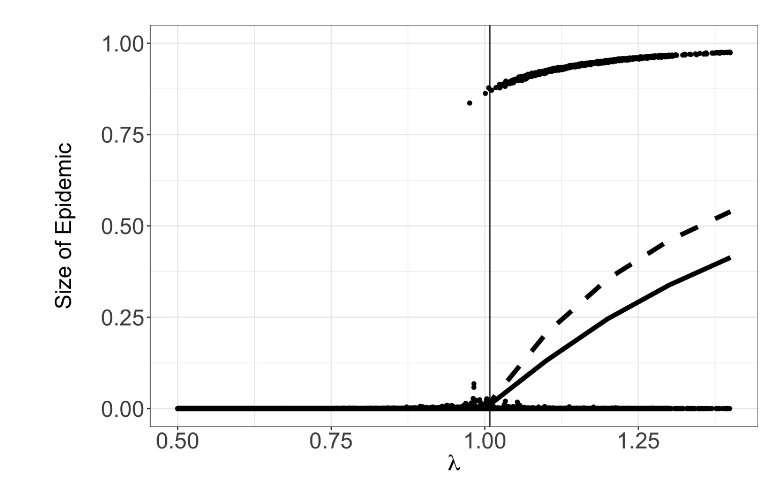
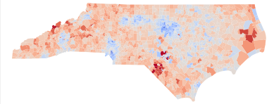
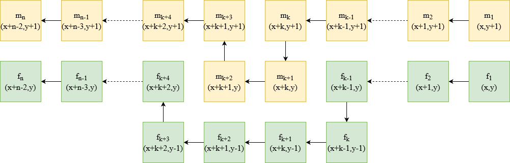

In Summer 2018 I participated in the DOmath REU at Duke under the supervision of Rick Durrett and Matthew Junge.
This project continued through the next year as an independent research course.
We studied random processes on graphs including epidemics on Galton-Watson trees, epidemics on random networkswith infection avoidance, and two-type annihilating particle systems on certain network topologies.
This work led to two papers, one of which was posted on ArXiv, and the other was published in Stochastic Processes and their Applications.
SIR epidemics on evolving graphs
Two-type annihilating systems on the complete and star graph
 During the summer of 2020, I participated in the Data+ REU at Duke under the supervision of Jonathan Mattingly, Greg Herschlag, Nick Eubank, and Eric Autry. During this project we worked on the Quantifying Gerrymandering project. We used dimensionality reduction to study the ways in which the voting patterns of the North Carolina population have changed in recent years, and how congressional district lines can alter the way in which these changes are expressed in electoral outcomes.
 From Spring 2021 through Spring of 2022, I worked on a project in tiling theory with John Reif. In this project we showed that a nondeterministic 2-dimensional tiling system is capable of simulating a general Turing Machine. The resulting paper served as my master's thesis.
If you are a USC student interested in working with me on topics related to theoretical computer science, feel free to drop me an email. If you let me know your interests, I am happy to either meet with you to discuss possible research projects, or put you in touch with someone whose interests may align more directly with yours. Previously I have mentored a high school student on a project in which he applied machine learning techniques to quantify the relationship between political endoresements and election outcomes. This project led to a paper published in the Journal of Emerging Investigators.